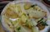
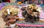
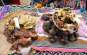
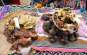
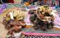
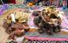
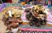
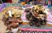

Toggle navigation
Biblioteca de La Papa
Origen
Origen
Historia
Cuentos
Cuentos
Español
Español
La Nuera Zorrina
La papa Qhachun Waqachik
La papa Qhachun Waqachik
Los gusanos de la papa
Los zorros ladrones de papas
La papa que miente al ladrón
El juego del Tambarukutu
Quechua
Quechua
Añas Qhachun
Qhachun Waqachik Papachamanta
Papa kurukunamanta
Papa suwa atuqkunamanta
Suwaman llullakuq papa
Tampuruqutuwan Pukllay
Galería de fotos
Materiales didácticos
Variedades
Variedades
Materiales
La Cocina Campesina
La Cocina Campesina
Recetas
Recetas
Caldo De Cordero
Causa De Papa
Chairo
Chuño Phasi
Estofado De Loro o Haucha
Lechón De Cordero
Lisas Uchu I
Lisas Uchu II
Moraya Phasi Con Queso
Papa Q'api
Papa Sancochada
Sopa De Lisas
T'impu
Torreja De Papa
Torta De Papa
Chuño Con Huikuro
Papa Con Trucha
Wayku = Fiambre
Sopa De Papa
Galería de fotos
Materiales
Sobre nosotros



 
 
  
 